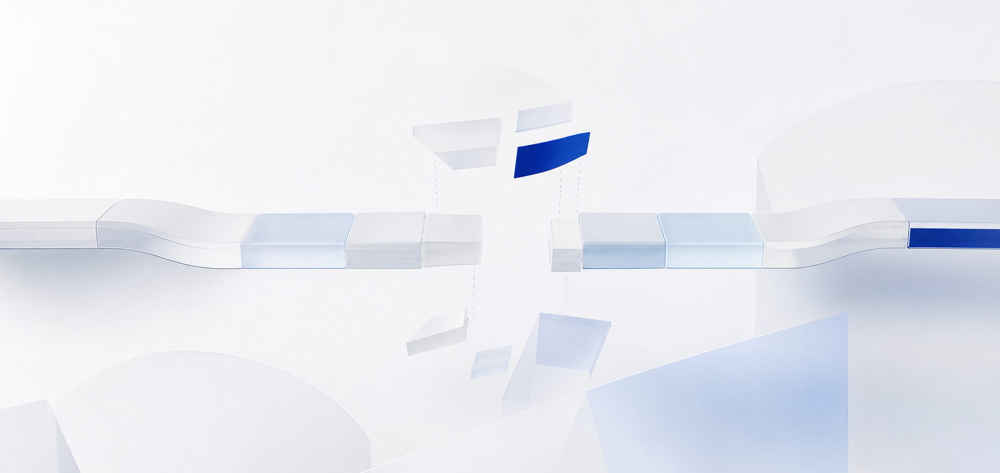

Market Opportunity
市场机会Cross-border sellers need efficient, compliant marketing tools.
跨境卖家急需高效合规的营销内容工具。
Case Study · 01
MY ROLEProduct Discovery · AI Workflow Design · 0→1 Prototyping需求洞察 · AI 工作流设计 · 0→1 原型落地
A RAG-powered vertical AI marketing-copy tool built for cross-border e-commerce sellers.
It turns private product knowledge into compliant, market-ready content for cross-border selling.
面向跨境电商商家打造的 RAG 垂直 AI 文案工具。
依托专属行业知识库，输出合规、本地化的营销内容，助力跨境销售。
Concept Video · 00:05
Nine modules documenting the complete journey from business insight to product delivery and iteration. 九个模块，记录从业务洞察到产品落地与迭代的完整路径。
A lightweight RAG-powered SaaS for cross-border merchants, built around manual content and compliance pain points.
面向中小跨境卖家的轻量化 RAG AI SaaS，聚焦人工文案与合规流程的效率痛点。
From market demand and competitor gaps to a focused RAG entry point and defensible product barriers.
从市场机会与竞品缺口出发，明确 RAG 切入点与可持续产品壁垒。
Cross-border sellers need efficient, compliant marketing tools.
跨境卖家急需高效合规的营销内容工具。

Existing tools lack vertical and compliance capabilities.
现有工具缺少跨境垂直能力与合规意识。
Focus on RAG, private knowledge base and compliance.
聚焦RAG、私有知识库与合规驱动文案生成。
Build private knowledge, compliance rules and scenario templates.
构建私有知识、合规规则与场景模板壁垒。
Segment three user groups and translate observed scenarios, needs, and pain points into prioritized product requirements.
聚焦三类核心用户，将场景、需求与痛点转化为分级产品优先级。
Single-person operation, writing all listing and marketing copy alone
单人独立运营，独自撰写所有Listing和营销文案Quickly generate basic compliant copy with low cost
低成本快速生成基础合规文案Limited language skills, no brand system, high learning cost for new tools
语言能力有限，无品牌体系，新工具学习成本高Translate core business pain points into measurable product goals and a phased path from MVP to scalable SaaS.
将核心业务痛点转化为可衡量目标，规划从 MVP 到规模化 SaaS 的阶段路径。
Cross-border sellers face high costs, low efficiency, and compliance risks in marketing copy creation.
跨境卖家在营销文案创作中面临高成本、低效率与合规风险。Compare model strategies, define the core AI stack, and balance deployment cost with human oversight boundaries.
对比模型方案，定义核心 AI 技术栈，并平衡部署成本与人工兜底边界。
Five core product modules, an end-to-end workflow, and role-based compliance controls.
五大核心产品模块，串联端到端使用流程与角色化合规风控体系。
Create an account and complete the guided product setup
创建账户并完成产品引导设置Upload brand documents, product materials, and compliance rules
上传品牌文档、产品资料与合规规则Choose the target platform, market, and marketing content scenario
选择目标平台、市场与营销内容场景Generate scenario-specific multi-language marketing copy
生成适配场景的多语言营销文案Validate generated content against platform and compliance guardrails
依据平台规则与合规护栏校验生成内容Export approved content in the required format and publish
按指定格式导出已通过审核的内容并发布Coordinate milestones, cross-functional ownership, delivery governance, and launch risk control.
统筹里程碑、跨职能协作、交付治理与上线风险管控。
Hover or click a milestone to view stage details 悬停或点击里程碑，查看阶段详情
Review product usage, AI performance, and business value through linked dimension cards and comparison bars.
通过联动维度卡片与对比条，复盘产品使用、AI 效果与业务价值。
Review key online technical risks and define a three-phase iteration roadmap for commercialization.
复盘上线核心技术隐患，分三期规划商业化产品迭代路线。